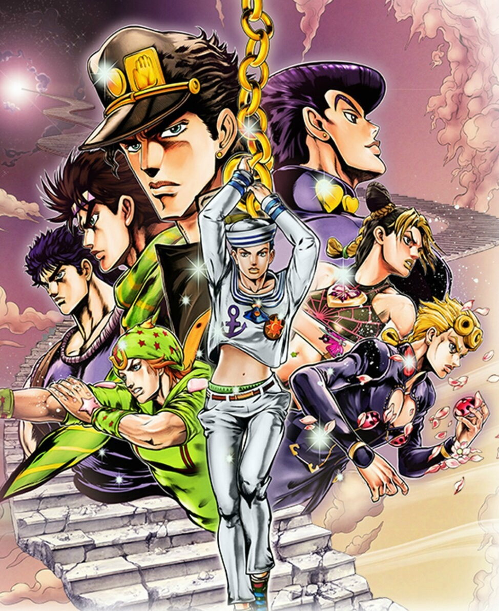

Топ просмотренных Аниме
Ночной Рейд - группа отступников, выполняющих диверсии против могущественной Империи, чьи земли простираются на целый континент. Мало кто знает, что хладнокровные убийцы, за чьи головы объявлена награда, на самом деле пусть и не совсем благородные, но всё же храбрые освободители и борцы с прогнившей системой, созданной коррумпированным правительством, которому совершенно плевать на бедствующее население Империи, до конца верное своему государю. Простой паренёк Тацуми, выходец из скромной деревушки, оказывается в эпицентре государственного переворота, становясь товарищем каждому в Ночном Рейде. Сюжет «Akame ga Kill!» от и до изобилует неожиданными поворотами, приводящими в итоге к совершенно неординарному финалу. Своей непредсказуемостью и уничтожением устоявшихся шаблонов, а также качественной визуализацией этот хит 2014 года многим пришёлся по вкусу.
Личная оценка 9/10
Ходят слухи, что в местных лесах обитают кровожадные демоны, которые питаются человеческой плотью. Вот только последние инциденты были так давно, что люди позабыли об опасностях дремучих лесов. Многие жители деревни считают, что сказание о демонах это просто страшилки и легенды. Танджиро Камадо живёт в маленькой деревушке, и он заботится о своей семье, ведь недавно исчез отец. Парню приходится работать на шахте и продавать уголь в городе. Очередная поездка на рынок не сулила неприятностей, но по возвращении домой парня ожидало чудовищное зрелище. Камадо увидел окровавленные тела родственников, которые были разбросаны во дворе. Оказалось, что лесные демоны напали на деревню и вырезали всех жителей. Чудом удалось выжить сестрёнке Нэзуко, но и у неё были проблемы, ведь существа превратили её в демона. Фэнтезийный мир наполнен жуткими тварями и разными опасностями, с которыми придётся повстречаться храброму Танджиро. Если смотреть аниме "Kimetsu no Yaiba" можно узнать, сможет ли юноша помочь сестре избавиться от проклятия, а также отыскать убийц семьи.
Личная оценка 10/10

Подростки часто пугают друг друга страшными легендами, которые заставляют застывать кровь в венах. Одним из таких рассказов делились ученики академии Камомэ, ведь именно в этом учебном заведении живёт легендарный призрак Ханако. Каждый из студентов знает знаменитую страшилку, но однажды одному из подростков удалось вызвать призрака, и после этого парнишка пропал. Оказалось, что всё это было не выдумкой и на третьем этаже в третьей кабинке женского туалета живёт зловещая сущность, которая способна исполнять желания. Вот только после последнего инцидента никто из студентов не решается проверить правдивость слухов. Нэнэ Ясиро никогда не боялась потусторонних сил, ведь она давно изучает сверхъестественные явления. Девчонка давно слышала о призраке девушки, но надобности обращаться к ней не было. Недавно студентка полюбила симпатичного мальчишку, но он не отвечал ей взаимностью, и Нэнэ решила обратиться к сущности, чтобы она исполнила просьбу. На удивление красавицы за дверью кабинки туалета скрывался полтергейст мальчишки. Он предупредил Ясиро, что за желание придётся заплатить чем-то важным для неё. Бедолага загадала желание, и она не подумала о последствиях. Опрометчивый поступок навсегда изменил судьбу красавицы.
Всё в жизни наивной школьницы перевернулось вверх дном после знакомства с Ханако и теперь её ждёт расплата. Все подробности этой истории можно узнать в аниме "Jibaku Shounen Hanako-kun". Бедолага не догадывается, в какую авантюру она попала. Всё что будет происходить с симпатичной девочкой, будет намного веселей, чем гласят пугающие легенды.
Личная оценка 7/10

«Невероятные приключения ДжоДжо» - на данный момент ярчайший представитель жанра сейнен и одна из самых культовых японских франшиз. За 30 лет существования манга стала гордостью Японии, а с выходом новой аниме-экранизации культурный феномен ДжоДжо начал притягивать тысячи поклонников с запада. Безумный стиль, безумный шарм, безумные сюжетные повороты и безумные схватки - глоток свежего воздуха для всей аниме-индустрии.
Личная оценка 9/10

Подчас человек готов пожертвовать всем ради победы, даже самым дорогим. Примером тому стал феодал Японии прошлых лет, что отдал на жатву тёмным силам своего собственного сына Хяккимару ради победы в войне. Трудно сказать, повезло мальчику или нет, ведь он выжил. Подобранный и выращенный добрым человеком, когда Хяккимару достаточно окреп, он отправился в долгое странствие в надежде забрать у демонов то, что принадлежит ему, а также отомстить своему злобному отцу, заключившему сделку с силами ада. На пути отважному юноше встречается пронырливый мальчишка Дороро, заранее кличущий себя лучшим из воров в стране. Вдвоём им предстоит дальняя дорога.
Личная оценка 8/10
Война закончилась, и молодая солдатка по имени Вайолет, для которой единственным близким человеком был её командир, с трудом привыкает к жизни простой гражданки. Она устраивается на работу "автозапоминающей куклой" - так называют девушек, печатающих письма на заказ и помогающих малограмотным людям яснее донести мысль. Поначалу работа даётся Вайолет нелегко - привыкнуть к механическому труду оказывается проще простого, а вот научиться понимать людей - куда сложнее. Тем не менее, девушка не бросает попыток стать первоклассной "куклой" и узнать, что же означает слово "люблю".
Личная оценка 10/10

Бороздящие просторы Гранд-Лайна пираты уже отчаялись найти таинственное сокровище легендарного Короля Пиратов Роджера, сулящие нашедшему их счастливчику роскошную жизнь. Спустя годы для большинства авантюристов мифический клад превратился в красивую легенду, но только не для молодого Монки Д. Луффи, который всей душой мечтает найти тайник Роджера, доказав, что достоин зваться новым Королём Пиратов. Единственное, что Луффи ставит выше собственной мечты, так это своих друзей, которые помогают юному капитану на пути к славе.
Личная оценка 10/10